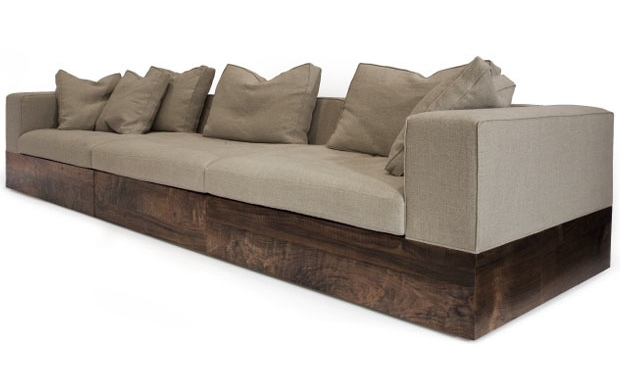
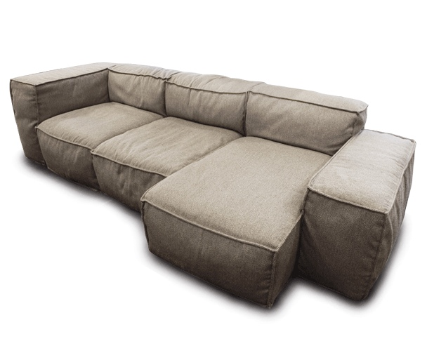

cc 2001 - 2010 Benjamin Birkenhake Digital ist besser
In einem der Asterix und Oblix Filme, gibt es "Das Haus, das Verrückte macht". Unsere beiden gallischen Freunde,
haben die Aufgabe dort den Passierschein A-38 zu besorgen, werden dort aber immer nur von einem Beamten zu
nächsten geschickt, müssen diese Formular ausfüllen und jene Auskunft machen.
Ich muss natürlich oft an diese Szene denken, wenn ich mit Bürokratien und dergleichen zu tun habe. In
den letzten beiden Wochen habe ich mich auf ein Abendeuter in der freien Marktwirtschaft geben, dass mich
ein weiters Mal in der Ansicht bestärkt, dass der "freie Markt" nur jene Form von bürokratischer Planwirtschaft
ist, bei der die Arschlöcher am Ende das Geld einstreichen. Dabei hab ich nicht mal etwas so ausgefallenes
machen wollen, wie eine Fernsehserien bei ihrem Start (in den USA) zu sehen, oder Lebensmittel ohne Chemie
und Gentechnik zu kaufen. Nein ich wollte etwas, was praktische jeder Deutsche, der schon mal bei seinen
Eltern ausgezogen ist, auch wollte: Ich wollte mir ein Sofa kaufen.

The Parc Sofa von Hudson Furniture Inc.
Um mit dem hoffnungsvollen Teil der Geschichte anzufangen. Ich hab ein Sofa gefunden, das ich haben möchte. Es scheint perfekt. Form, Materialien, Ausführung, Stil – alles ist genau das, was ich mir vorgestellt habe – ach was, es übertrifft meine Hoffnungen noch. Das Parc Sofa von Hudson Furniture ist schlicht das perfekte Sofa. Niedrig, tief, breit und dem Anschein nach saugemütlich. Leider muss es beim Anschein bleiben, denn um Probe zu sitzen müsste ich schon nach East-Manhattan jetten. Und angesichts der Tatsache, dass man es bei Hudson Furniture scheinbar nicht nötig hat, Preise an die eigenen Produkte zu schreiben und statt dessen die Anfahrtsbeschreibung lieber mit einem "above Alexander McQueen" versieht, um mal gleich deutlich zu machen, in welcher Liga man dort spielt, spare ich mir den Besuch in New York auch.

Peanut
Tragischer Weise haben die dort nicht nur das perfekte Sofa, sondern auch noch das Geschwisterchen des perfekten Sofas, das selber auch schon wieder fast so perfekt ist, dass man gleich in den Flieger steigen und es im Handgepäck nach Deutschland schmuggeln möchte, scheißwas auf Stewardessen, Zoll und Naturgesetze, hauptsache, das Ding steht in meiner Wohnung. Die Tragik der Existenz diese beide perfekten Sofas liegt allerdings nicht alleine in der Unerreichbarkeit, sondern in der Tatsache, dass alle anderen Sofas, die mir der "freie Markt" in Deutschland anbietet, gegen sie wirken, wie Johnny Walker neben einem Lagavulin – es sind zwar noch Sofas, aber man ist doch geneigt, nicht das gleiche Wort dafür verwenden zu wollen, weil es eine Gleichwertigkeit impliziert, die schlicht nicht gegeben ist.
Meine Verzweiflung, was die Sofa-Suche angeht, findet ihre deutlichsten Ausdruck in der Tatsache, dass ich bereits pseudo-antikes Zeug ebenso in Betracht gezogen habe, wie ortientalisch-asiatisches Zeug. Jetzt fehlt eigentlich nur die Evaluation von Sitzsäcken, Hängesesseln und Dildos als Sitzmöbel und ich hab alle Optionen durch.
Inzwischen bin ich sooo kurz davor, mir das Parc Sofa einfach selber zu bauen. Mehrere Dinge halten mich
davon aber noch ab. Erstens. Echter Möbelbau ist was anderes als Schildkrötengehebe mit Spaxschrauben oder ein
paar Regal an die Wand dübeln. Ich musst feststellen, dass ich nichteinmal die Werkzeuge kenne, die dort
eingesetzt werden (Oberfräse, anyone?), geschweige denn, dass ich Erfahrung im Umgang damit hätte.
Zweitens. Selbst wenn ich den ganzen Holzteil hinbekommen sollte – immerhin war ich
in der Hinsicht bisher halbwegs geschickt – so habe ich vom Polstern nun so ziemlich überhaupt keine
Ahnung. Nicht nur wollen die richtigen Füll- und Außenstoffen ausgewählt werden, nein, nein, wenn man
die hat, muss man sich erstmal ans Nähen machen. Zugegebenermaßen hab ich in meiner Jugend gerne genhäht,
aber das beschränkt sich auf Flicken, die Jeans verzierten. Einen Sofabezug von Hand nähen zu wollen
ist sowohl in Sachen Selbstdisziplin als auch in Haltbarkeit ein fragwürdiges Utnerfangen.
Drittens. Wie eine fluxe Internet-Recherche ergeben hat, längen die Kosten für die
Baumaterialien eines Sofas wenn überhaupt nur knapp unter dem, was ein nettes in der Volkrepublik
China gebautes Sofa kosten würde. Das wäre ja noch ok, wenn, ja wenn man denn die Sicherheit hätte,
hinterher ein Sofa zu haben, dass gut aussieht, bequem ist und wenigstens ein paar Jahre hält.
Andererseits - wenn es klappt, dann habe ich nicht nur das perfekte Sofa. Ich bin dann auch noch jemand der perfekte Sofas bauen kann, die man auf Webseiten (die ich überigens auch bauen kann) für so unglaublich viel Geld verkaufen kann, dass ich es nichteinmal nötig habe, einen Preis dran zu schreiben … verlockende Vorstellung. Oder bin ich schon verrückt?
Kommentare
von Thomas #
Meine Heimwerkerhöchstleistung war bislang ein selbstgebauter Küchenunterschrank mangels passender Alternativen. Das Teil war ganz ok, ein bisschen wackelig vielleicht.
Bevor man allerdings alle Werkstoffe und -zeuge zusammenhat, die man braucht um solide (!) Möbel zu bauen, tut man wahrscheinlich besser daran einfach geduldig weiterzusuchen.
Oder frag schlicht mal nach welche chinesische Firma ein bezahlbares Duplikat des Hudsonsofas herstellt.
von ben_ #
Zu Gute halten kann ich mir auf der Haben-Seite des stabilen Möbelbaus immerhin schon ein selbstgebautes Bett, das seit 8 Jahren ohne Murren. Von daher bin ich sehr hoffnungsfroh.
von n¦tropie #
Lösung: Das Riesensofa. Aus Pappe. :)
von wolfgang #
Ui! Ein Bett selber bauen. Mir war zwar klar, dass du ein DigitalerHeimwerker bist, aber das sich das auch auf die Materielle Welt transportieren lässt :) Schön! Ein Bett hat ja zum Glück auch weit weniger Komplexität und Anforderung als ein Sofa! Es sei denn es gibt Sofa-Matratzen ;)